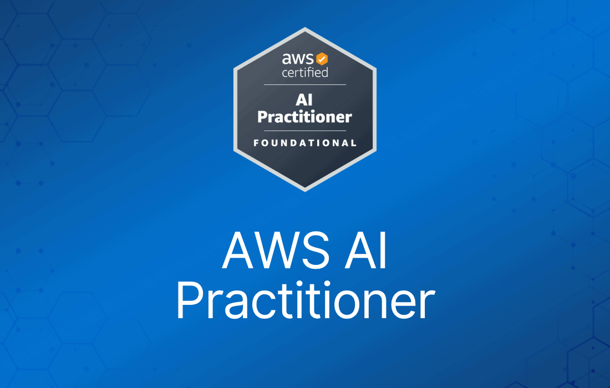
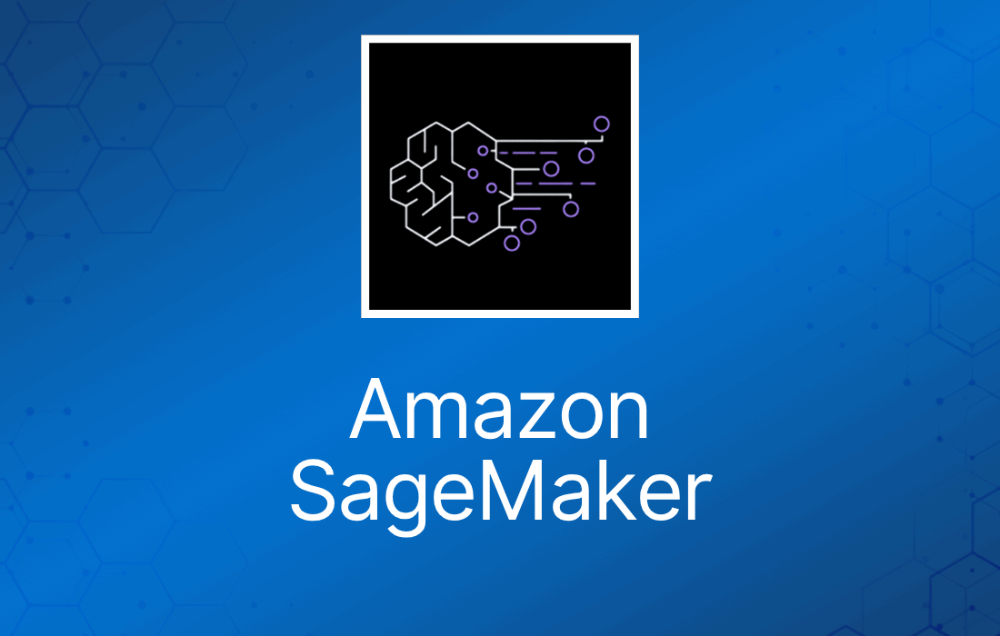
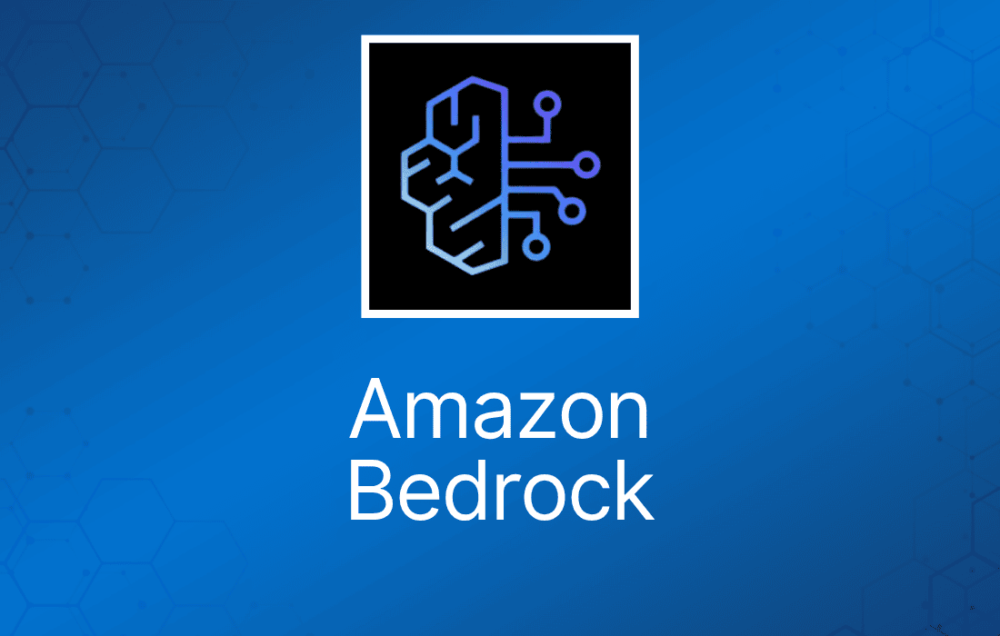

在 AWS Certified AI Practitioner 考试中，Amazon SageMaker 和 Amazon Bedrock 是两个最常考的服务。它们是 AWS 上机器学习和生成式 AI 解决方案的核心。
理解这些服务、它们的特性以及如何应用于真实场景，是通过考试的关键。下面我们整理了关于 SageMaker 和 Bedrock 必须掌握的关键知识点，涵盖核心能力、工具和使用场景，帮助你高效备考。
Amazon SageMaker
用途：一项全面的全托管服务，用于构建、训练和部署机器学习模型。它旨在简化从数据准备到模型监控的整个 ML 生命周期。
关键知识点：

- SageMaker 是 AWS 机器学习服务的核心，用于训练自定义模型、部署预构建模型以及管理 ML 工作负载。
- 同时覆盖监督学习和无监督学习，包括强化学习。
- 支持 TensorFlow、PyTorch、MXNet 等开源 ML 框架。
SageMaker Studio
用途：面向数据科学家和 ML 工程师的基于 Web 的集成开发环境（IDE）。
关键知识点：
- 为所有 ML 开发任务（数据准备、训练、调试、部署）提供统一界面。
- 让你可以在一个环境中访问数据、构建模型并完成部署。
- 是管理实验、跟踪 artifact 和比较模型版本的关键工具。
SageMaker Data Wrangler
用途：通过提供数据清洗、转换和可视化工具，简化数据准备过程。
关键知识点：
- 与 SageMaker Studio 直接集成。
- 提供 300 多种内置转换（例如缺失数据处理、特征工程）。
- 支持 Amazon S3、Redshift、RDS 等多种数据源。
SageMaker Feature Store
用途：集中存储和检索机器学习特征的仓库，特征可跨多个模型复用。
关键知识点：
- 有助于保持训练与推理之间的一致性。
- 既能为低延迟模型推理提供实时特征，也能为大规模作业提供批量特征。
- 便于跨团队、跨场景共享特征。
SageMaker Clarify
用途：检测数据和模型中的偏差，并为模型预测提供可解释性。
关键知识点：
- 提供公平性指标，确保模型不会基于敏感属性（如种族、性别）产生歧视。
- 使用 SHAP（SHapley Additive exPlanations）等模型可解释性工具，从全局和局部两个层面解释预测。
- 适用于监管合规和负责任 AI 实践。
SageMaker Model Monitor
用途：自动监控已部署模型的数据漂移和性能下降。
关键知识点：
- 持续跟踪准确率（accuracy）、精确率（precision）、召回率（recall）等关键指标。
- 自动检测输入数据分布是否发生变化，发现异常时触发告警。
- 必要时可触发重新训练，以维持生产环境中的模型性能。
SageMaker JumpStart
用途：提供预构建模型和解决方案，帮助快速启动 ML 项目。
关键知识点：
- 包含 NLP、计算机视觉等领域的热门模型架构，减少从零训练所需的时间。
- 为欺诈检测、需求预测、个性化推荐等常见任务提供预构建解决方案。
- JumpStart 还可用于对预训练模型进行微调，以适配特定场景。
SageMaker AutoPilot
用途：以最少的人工干预自动构建和训练机器学习模型。
关键知识点：
- AutoPilot 会探索不同的 ML 算法和调参组合，给出最佳模型。
- 通过生成展示所有步骤的 notebook，让模型构建过程透明可见。
- 同时支持分类和回归任务，并根据输入数据选择合适的 ML pipeline。
SageMaker Pipelines
用途：用于自动化和管理 ML 工作流的管道服务。
关键知识点：
- 支持创建可重复、自动化的 ML 模型构建、训练和部署工作流。
- 与 SageMaker 的 MLOps 工具（如 Model Monitor 和 Clarify）集成。
- 支持对模型及管道中的步骤进行版本管理，确保可复现性。
SageMaker Experiments
用途：管理和组织 ML 实验，以跟踪和比较模型。
关键知识点：
- 便于跟踪不同的模型版本、输入数据和参数。
- 可以自动捕获并存储 ML 实验的元数据，供后续分析。
- 帮助找出哪种模型配置能获得最佳性能。
SageMaker Debugger
用途：提供模型训练的实时洞察，检测过拟合、欠拟合等问题。
关键知识点：
- 自动监控训练作业，训练过程中出现异常时发出告警。
- 可以对 CPU、内存使用等系统资源进行剖析，这对优化模型训练性能至关重要。
- 通过在模型训练完成前识别性能不佳的情况，Debugger 能节省大量时间。
SageMaker Batch Transform
用途：在预训练模型上运行大规模批量推理。
关键知识点：
- 面向无需实时 endpoint 的大批量预测场景。
- 特别适合处理不需要实时预测的大型数据集。
- 输入和输出数据存储在 Amazon S3 中，便于与数据湖集成。
SageMaker Real-Time Inference
用途：将模型部署到 endpoint，提供低延迟的实时预测。
关键知识点：
- 适合需要实时预测的场景，如推荐引擎或欺诈检测。
- 可根据流量自动扩缩，应对不同的预测负载。
- 与 SageMaker Model Monitor 集成，确保模型性能稳定一致。
SageMaker Asynchronous Inference
用途：处理不需要立即响应的长时间运行的推理请求。
关键知识点：
- 最适合处理分析耗时较长的大输入（如高分辨率图像、视频）。
- 支持非阻塞推理：请求进入队列，结果就绪后存入 Amazon S3。
- 有助于降低 endpoint 成本，因为你只为实际用量付费。
SageMaker Ground Truth
用途：通过人工标注和自动标注创建高准确度的训练数据集。
关键知识点：
- 支持多种标注工作流，包括 2D/3D 目标检测、文本分类和语义分割。
- 利用主动学习自动标注简单任务、把复杂任务留给人工标注，从而降低标注成本。
- 与 Amazon Mechanical Turk 及私有标注团队选项集成。
Amazon Bedrock
用途：一项全托管服务，让开发者可以使用基础模型（Foundation Model，FM）构建和扩展生成式 AI 应用，而无需管理底层基础设施。
关键知识点：

- 支持多种预训练基础模型（FM），用于文本、图像、聊天机器人等生成式 AI 任务。
- 提供多个预构建 FM（如基于 GPT 和 BERT 的模型），无需从零构建模型。
- Bedrock 可与其他 AWS 服务（如 S3、SageMaker）集成，用于存储数据和部署 AI 解决方案。
基础模型（Foundation Models，FM）
用途：为文本生成、摘要、图像创作等任务设计的预训练模型。
关键知识点：
- Bedrock 中的基础模型包括 GPT、BERT 等大语言模型（LLM），它们在海量数据集上完成了预训练。
- Bedrock 支持对这些 FM 进行微调以适配特定业务需求，无需从零开始。
- 支持文本生成、图像创作和代码生成任务，助力快速开发与部署。
检索增强生成（Retrieval Augmented Generation，RAG）
用途：通过引入相关的实时数据来增强生成式 AI 的输出。
关键知识点：
- RAG 将预训练模型的输出与外部数据源或知识库结合，给出更准确、更贴合上下文的回答。
- 典型场景：生成回答时拉取实时信息（如产品数据库或知识库），改进聊天机器人的回答质量。
- 通过将回答锚定在真实数据上，减少“幻觉”（生成看似合理但错误的信息）。
通过微调进行模型定制
用途：让企业可以将基础模型适配到特定领域和使用场景。
关键知识点：
- 微调通过提供领域特定数据来调整模型权重，使模型更适用于客服、医疗、金融等任务。
- Bedrock 支持无需 ML 模型架构专业知识即可完成微调。
- 在细分任务上，微调后的模型通常比通用 FM 表现更好。
Prompt Engineering（提示工程）
用途：通过精心设计输入提示（prompt），让生成式模型产出期望的结果。
关键知识点：
- 通过在输入提示中加入上下文或示例来提升回答质量，这一点非常重要。
- 常用技术包括 zero-shot（无示例）、few-shot（少量示例）和 chain-of-thought（在提示中说明推理过程）。
- 提示工程对最大化模型的准确性和相关性至关重要，尤其是在面向客户的应用中。
Agents for Amazon Bedrock
用途：通过将多个任务或模型串联起来，自动化复杂工作流。
关键知识点：
- Agent 可以管理多步骤流程（如先检索数据、再由生成式模型输出），无需人工干预。
- 常用于自动化客服工作流，这类场景需要多个动作（如数据查询、生成回复）。
- 支持自定义配置，可跨不同基础模型和外部系统编排任务。
成本结构
用途：基于模型用量提供按使用量付费模式。
关键知识点：
- 定价通常按模型使用过程中消耗的 token 数量计算，可灵活适应不同的工作负载。
- 微调或使用特定高需求基础模型可能产生额外费用。
- 对于需要有保障的高可用性能的企业，可以选择 Provisioned Throughput。
安全与治理
用途：确保基础模型和生成式 AI 解决方案的安全合规使用。
关键知识点：
- Bedrock 与 IAM（Identity and Access Management）等 AWS 服务集成，控制对模型和数据的访问。
- 支持静态数据和传输中数据的加密，确保敏感信息安全。
- 用户可以通过 AWS CloudTrail 和 CloudWatch 监控和审计模型使用情况，满足治理要求。
模型评估与监控
用途：让企业能够跟踪已部署基础模型的性能和准确性。
关键知识点：
- Bedrock 支持对生成式模型输出进行人工评估，以评估质量（如准确性、连贯性）。
- 常用评估指标包括 ROUGE（文本摘要）、BLEU（机器翻译）和 BERTScore（句子相似度）。
- 持续评估有助于确保模型在不断变化的环境中保持良好表现，并与业务目标保持一致。
与 AWS 的集成
用途：与其他 AWS 服务无缝集成，构建端到端 AI 工作流。
关键知识点：
- 可轻松集成 Amazon S3（存储数据和模型输出）、Amazon SageMaker（进一步的模型训练）和 Amazon OpenSearch（存储 embedding 向量并执行向量搜索）。
- Bedrock 模型可以通过 Amazon SageMaker endpoint 部署，用于实时推理或批处理。
- 支持 VPC 集成，可将模型部署在隔离网络中，满足合规与安全标准。
多模态模型（Multi-Modal Models）
用途：可处理文本、图像、音频等多种数据类型的模型。
关键知识点：
- Bedrock 支持多模态模型，能够处理多种类型的输入，例如根据图像生成文本，或基于视觉数据回答问题。
- 多模态能力拓展了更多使用场景，如内容创作、增强搜索和推荐系统。
- 这类模型是涉及多种数据源的 AI 应用的关键（例如为图像生成描述文字或对视觉内容做摘要）。
常见问题
什么是 AWS Certified AI Practitioner 认证？适合哪些人？
AWS Certified AI Practitioner 认证面向希望掌握 AWS 生态中人工智能（AI）和机器学习（ML）基础知识的人群。它非常适合与数据科学家或工程师协作的非技术岗位人士，帮助他们理解 AI/ML 解决方案在 AWS 上是如何实现的。
AWS SageMaker 与 AI Practitioner 认证有什么关系？
AWS SageMaker 是 AI Practitioner 认证涵盖的关键服务，提供构建、训练和部署机器学习模型的工具。虽然该认证侧重概念性知识，但了解 SageMaker 的能力可以让你对 AWS 的 ML 服务有更实际的认识。
AWS Certified AI Practitioner 考试涵盖哪些内容？
考试考查你对 AI/ML 概念、AWS AI 服务（如 SageMaker、Rekognition、Polly）的理解，以及如何为不同场景选择合适的 AI/ML 解决方案。
如何备考 AWS Certified AI Practitioner 考试？
备考可以利用 cheat sheet、视频教程、模拟考试和动手实验等资源。Digital Cloud Training 提供一整套备考工具，助你顺利通过。
获得 AWS Certified AI Practitioner 认证有什么好处？
获得该认证可以证明你具备 AI/ML 基础知识，并展示你为 AI 解决方案选择合适 AWS 服务的能力。在需要与技术团队协作或参与云端 AI/ML 项目的岗位上，它能提升你的可信度。